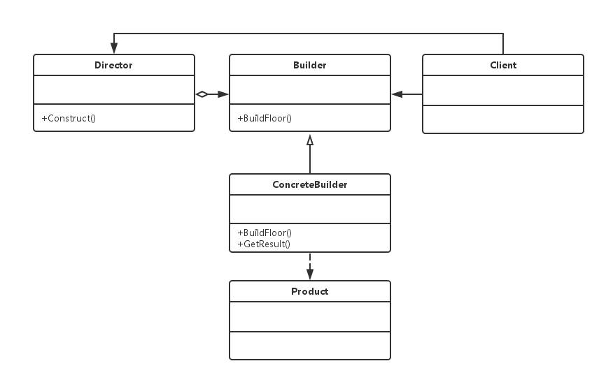

设计模式速谈：五、建造者模式
今天我们继续来聊设计模式。在上一篇中我们讲解了“工厂模式”的另一种更加抽象的形式 — “抽象工厂模式”，这种模式适用于属于不同产品族但属于相同产品等级产品的构建。今天要介绍的仍然是“创建型”设计模式中的一种 — “建造者模式”。
试想这样一个场景：我们来设计一个游戏场景中的“房屋”。对于一个“房屋”这个结构来说，它主要包括“地板，墙壁，窗户，门，天花板”这五个基本的部分，并且对于任意一个房屋来说，都是含有这五个基本的组成部分的。同时，我们在构建房子的过程中也是按照一定的顺序来进行的，比如先建造地板和墙壁，最后建造天花板。在这整个构建房屋的过程中，其构建的步骤和顺序是基本相同且不变的（比如先建造地板后建造天花板这个顺序）。而相对房屋中某个具体的组件而言（比如门），选用哪种样式，哪种规格的门便需要进行一番商议了，对于一个房屋构建过程中的这部分具体组件的构建我们称其是易变的。
在上述的场景中我们可以发现，一个房屋的基本组成结构和构建的顺序是基本不变的，但是对于每一个独立的“组件”而言，又有着不同的组成形式。对于这样的场景，我们便可以使用“建造者模式”来进行构建。
在软件系统中，有时面临着“一个复杂对象”的创建工作，该复杂对象通常由各个部分的子对象用一定的算法构成。这个复杂对象的各个部分经常面临着剧烈变化。，但是将它们组合在一起的算法却相对稳定。而“建造者模式”就是为了解决该类问题而存在的，它将一个复杂的构建与其表示相分离，使得同样的构建过程可以创建不同的表示。

从上面给出的 UML 类图中可以看到，“建造者模式”将一个复杂任务中相对稳定不变的部分放到了 “Director” 中，而 “Builder” 则规定了每一个具体组件需要遵循的标准，再这个标准之上可以对各个“组件”进行任意的改造。多个 “Builder” 类聚合成了 “Director” 类。
// House.java；
public class House {
// 房屋类的属性和方法；
public int doorStyleNum = 1;
public int floorStyleNum = 1;
public int wallStyleNum = 1;
public void setDoor(int val) {
this.doorStyleNum = val;
}
public void setFloor(int val) {
this.floorStyleNum = val;
}
public void setWall(int val) {
this.wallStyleNum = val;
}
}// Builder.java；
public abstract class Builder {
// 抽象的构建器类，记得包含返回实例的方法；
public abstract void buildFloor(int val);
public abstract void buildDoor(int val);
public abstract void buildWall(int val);
public abstract House getHouse();
}// ConcreteBuilder.java；
public class ConcreteBuilder extends Builder {
// 具体的构建器类，记得包含返回实例的方法；
House house = null;
public ConcreteBuilder() {
this.house = new House();
}
@Override
public void buildFloor() {
this.house.setFloor(1);
}
@Override
public void buildDoor() {
this.house.setDoor(2);
}
@Override
public void buildWall() {
this.house.setWall(3);
}
@Override
public House getHouse() {
return this.house;
}
}// Director.java；
public abstract class Director {
public static House createHouse(Builder builder) {
// 工头类，负责制定工程整体的施工顺序，初期制定好后期基本没事干，全部交由工人去具体实施；
builder.buildFloor();
builder.buildDoor();
builder.buildWall();
return builder.getHouse();
}
}// Client.java；
public class Client {
public static void main(String[] args) {
// 客户类，让工人们按照工头的旨意去造房子，但工人们都各具自己的特色；
House house = Director.createHouse(new ConcreteBuilder());
System.out.println(house.doorStyleNum);
System.out.println(house.floorStyleNum);
System.out.println(house.wallStyleNum);
}
}对于“建造者模式”的快速总结：
- 工头：“我这里制订了整个工程的具体步骤，但具体每个步骤找谁去做，由客户们选择”。
- 客户1：“第一个步骤我想让小强工人去做，第二个 …”。
- 客户2：“第一个步骤我想让小明工人去做，第二个 …”。